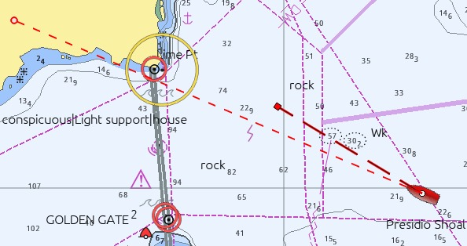
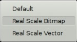
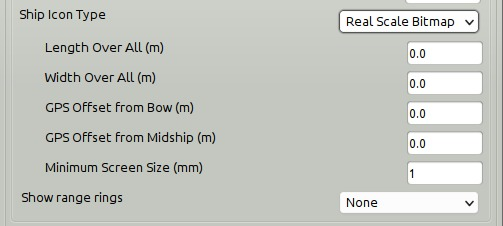
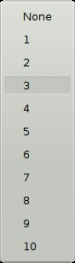
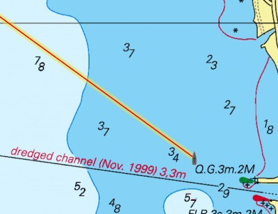
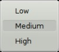
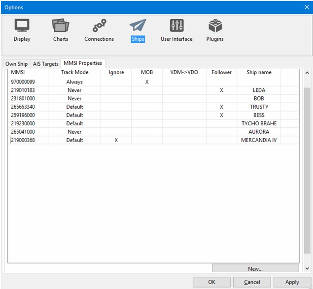

The Ships
Own Ship

Display Options
COG Predictor Length (min)
Shows a red dashed line in front of your own boat, with present COG and ends in a small square, which represents where you will be in the set number of minutes, with the present speed. 6 minutes is a good starting value for piloting. If your vessel has a SOG of 10 knots the dashed line will be 1 nautical mile long. 60 minutes makes sense on a coastal passage and 24 x 60=1440 minutes on longer blue water passages.
Heading Predictor Length
If a heading sensor is available and outputs an nmea data stream, this is shown as a finer line with shorter dashes ending in an open small circle. The length is set in Nautical miles.

The width of the COG Predictor can be adjusted in the opencpn.ini configuration file. Find the line below and adjust the value.
OwnshipCOGPredictorWidth=3
Warning: Don't edit the opencpn.ini (opencpn.conf) file when OpenCPN is running.
Ship Icon Type
The following options are available for Ownship:

Default
This will use the icon that comes with OpenCPN, unless you have installed your own icon, “ownship.jpg”. More about installing your own icons in Marks and Routes .
Real Scale Bitmap
This option will adjust the size of the default icon, depending on your settings. When using this setting, the dialog expands and five more options related to the size of “ownship” become available. See picture below

Length Over All (m)
The overall length of Own Ship in meters
Width Over All (m)
The overall width of Own Ship in meters
GPS Offset from Bow (m)
The distance in meters from the bow of Own Ship to its GPS antenna
GPS Offset from Midship (m)
The distance in meters from Own Ship's center line to its GPS antenna. Use a positive value for an offset to starboard and a negative value for an offset to port.
Minimum Screen Size(mm)
The size of the Own Ship icon on the screen. Default is set to 1mm.
Real Scale Vector
Works the same as the previous option with the exception that ownship is a somewhat boxy, computer rendered ship. It's currently not possible to change the vector-own-ship.

The dot represents the set location of the GPS.
Show radar rings
These show up as red rings centered on your gps position and can be useful in different circumstances, such as keeping clear of dangers. The settings are, hopefully, intuitive.

Once the number of radar rings are selected, and not equal to “None” the dialog expands, and shows more settings. The Distance Unit for Radar rings is set here, and does not follow the the global settings in Options→Display→Units. The choices are Nautical Miles and Kilometers

Tracks
Automatic Daily Tracks
Automatic Daily Tracking ensures that the track-points collected throughout a single day (midnight to midnight in local zone time) are stored and managed as a single (possibly multi-segment) track.
If the Automatic Daily Tracking check-box is selected, the “Toggle Tracking” tool will turn tracking on and off. However, on turning it off, the accumulated track will be extended with the previous one if it does not extend into yesterday. Disjoint segments are kept separate, time-adjacent segments are merged into a single segment. Disjointed track segments can be joined through the right-click menu when they are selected in the Route Managers Tracks Tab.
Every Midnight the tracking is turned off and on again automatically to ensure that the track does not span dates. If Automatic Daily Tracking is selected during the day, when some tracks have already been created, only the last one will be merged with future daily tracks.
Assuming Automatic Daily Tracking is on, normally during tracking periods there will be two tracks visible in the Route Manager: the current track (red color track-points on the chart) and the previously accumulated track for the day. After toggling tracking off there will be just one track for this day.
If the timezone needs to be changed, it is a good idea to close OpenCPN application before.
With the manual capability of splitting and extending, the daily tracks can be easily managed at any time.
The daily tracks will be automatically named with the date in the local Time Zone, but can of course be changed manually.
The Automatic Daily Tracks follow the settings in Tracking Precision, see below.
Without Automatic Daily Tracks selected, OpenCPN handles tracks as before.
Highlight Tracks
Shows a 7 to 10m wide highlighting on either side of the track. This is not selectable for individual tracks. The idea of the highlighting is to remind us that following a previous track exposes us to the inherent inaccuracy of GPS, and that the real track followed is most likely within the highlight region, but not necessarily in the middle. And this says nothing about the accuracy of the underlying cartography. For many charts it is prudent to assume at least 1.5 mm inaccuracy using the nominal scale of the chart. For a chart in scale 1:20,000 this translates to 30m.

Tracking Precision

With track button in the ToolBar activated this setting affects the size of the data saved. It also affects the “smoothness” of the track, though this is only visible when zoomed in to a very large scale. OpenCPN uses smart dynamic tracking, and only uses those track points that actually contributes anything to the track. A straight line track for example is only represented by it's endpoints. This is done by analyzing the track just behind the boat. The process is visible in real time, close to Own Ship. The end result is good track accuracy while keeping the size small.
- Low: Good for offshore passages.
- Medium: Very good for all normal uses.
- High: Only necessary when very tight maneuvering needs documenting.
Routes
Waypoint Arrival Circle Radius
Gives an answer to this question. When following a Route with the autopilot engaged at what distance from the upcoming waypoint should OpenCPN tell the autopilot to change to the next waypoint? The default is 0.05 nautical miles. This is equal to about 93 meters or 300 feet. The default setting does not fit all circumstances. A number of factors are involved, for example,
- the type of navigation,
- the waypoint selected,
- Own Ship's turning radius and speed.
Find what settings suit your boat by testing.

The arrival radius can also be set individually for each waypoint in the Waypoint Properties dialog.
Advance route waypoint on arrival only
Routes are explained in Marks and Routes . With an active route, the Dialog “This Leg” is visible near the upper right corner of the screen. This dialog contains “RNG”, the “actual range”, or distance to the next waypoint. The “normal range” is different. It is the distance from ownship to a line which passes through the destination waypoint and is at right angles to the current route segment. The actual range is always equal to or greater than the normal range. When the difference is greater than 10% both values are shown in “RNG” (Shown in the Active Route Console  The “normal” range is the second number shown. 1.88 in this case.
When following a Route OpenCPN normally decides to advance to the next waypoint if at least one of the following two conditions apply.
The “normal” range is the second number shown. 1.88 in this case.
When following a Route OpenCPN normally decides to advance to the next waypoint if at least one of the following two conditions apply.
- The “normal range” is less than the declared arrival radius.
- Own Ship is moving away from the target waypoint, and has been for more than two seconds.
With Advance route waypoint on arrival only activated, OpenCPN only advances the route to the next waypoint, if condition 1 above is true. Condition 2 is ignored.
This feature is useful when sailing and you can't lay the next mark and are forced to tack a few times to reach it. It allows a ship to move away from waypoint without automatically advancing to next waypoint. This ensures that the next waypoint stays active until you either reach it, or you reach a line through it, which is perpendicular to the marked route. In the latter case you have a cross track error greater than the arrival radius.
On the other hand…. Option 2 helps you if you really want to cut a corner by a large distance in such a way that the “normal range” will never be less than the arrival radius. We want to automatically advance the route in this case.
AIS Targets

MMSI Properties
Maritime Mobile Service Identifier (MMSI) is a number identifying a ship in communication. MMSI consists of nine digits. All VHF units using Digital Selective Call (DSC), are programmed with the vessels MMSI. The same applies for AIS and EPIRBs. For more about MMSI from Miltech
MMSI numbers, individual targets, can be handled in a few preset ways. Below we have set 970000099 as an MMSI that should be tracked as a MOB. The number could for example belong to a crew member's Personal Locator Beacon.
Several MMSI IDs below are set to never show their tracks. This can be used on frequent targets in your neighborhood, like ferries etc. The MMSI 219000368 is set to never be shown. Be aware that neither this target nor its track will ever be seen on your screen.
The MMSI 219010183 is set as “Follower”. This is a buddy and no AIS Alert is shown. The “MMSI Properties” popup becomes available when right-clicking. Doubleclicking on the MMSI bypasses the popup an takes you directly to the Properties edit dialog.

Add a new target to track

MMSI:
Enter the MMSI number that the new action should apply to.
Note: An MMSI Id used to be nine digits. A warning message will be shown if the entry is more or less.

If you for some reason, wish to save a non-nine-digit number click “OK”, otherwise “Cancel” will take you back to edit the number.
MMSI Tracking
Default tracking
This is the normal tracking controlled by Options→Ships “OwnShip” and “AIS Targets” tabs.
Always track and Never track
The MMSI Properties dialog allows one to preset the tracking behavior of a particular MMSI target, even if the target is not presently visible. Always track a friend or a ship you are interested in. Ignore that ferry that just clutters your screen. Just a few examples.
Ignore this MMSI
The target will not show at all on the screen.
Handle this MMSI as SART/PLB MOB.
With this setting a MOB from your ownship will be signalled immediately. Special Search and Rescue Transponders, SARTs, are now available, using the AIS system. Personal Locator Beacons transmitting on the AIS frequencies are also available. These are sometimes called Personal AIS MOB Devices. Don't confuse these with the more common personal EPIRB, that cannot be tracked by OpenCPN.
Entering the the MMSI number makes it possible to use these devices as an onboard emergency MOB tracking system. Setting off a device alarms all vessels that can receive the signal but it tells you that this emergency is directly related to your vessel. OpenCPN will now treat this MMSI as a standard MOB. Read more Man OverBoard .
The alarm is entered in Options → Ships→ AIS Targets →“Play Sound on CPA/TCPA and DSC/SART emergencies.” Have a look at AIS SART to see how OpenCPN reacts to an alarm.
Convert AIVDM to AIVDO for this MMSI
- AIVDM NMEA 0183 sentence → AIS position reports from other vessels
- AIVDO NMEA 0183 sentence → AIS position reports from own vessel
The setting is intended for the following very specific scenario:
- You have an AIS transponder, not connected to your computer.
- You have a separate AIS receiver, used to monitor your own AIS signal, as well as all other traffic.
- You desire not to collide with yourself, virtually.
So you instruct O to convert the AIVDM for your MMSI coming in via your AIS receiver into AIVDO, or Own Ship. Thus, no collision.
The option is also handy to clear a non-sense “ownship” AIS icon from the screen when the AIS transponder is misconfigured.
Note that the option Ignore this MMSI can be used to achive the same result
This MMSI is my follower – No CPA Alert
When this option is active no AIS Alert will be shown for that target. This can be used for a buddy sailing close to you and you don't wont a CPA alert message for that target but still for other ships coming too close.
Ships name
The Ship name connected to a MMSI ID will be added to the list once the new ID is saved or edited. The ship name is automatically printed provided that the actual ship is present on screen or has previously been and was saved in the AIS ship name file. In either case the ship name will be added first time the boat is present in OpenCPN.